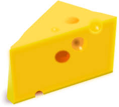
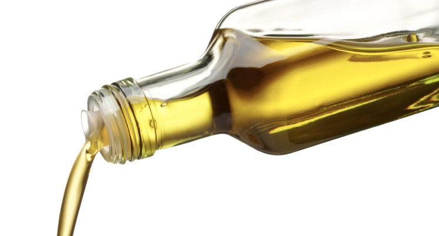

Det finnes 5 forskjellige næringsstoffer. De er fett, karbohydrater, proteiner, mineraler og vitaminer.
Vi trenger alle fem for å leve og være friske.
Alle cellene i kroppen trenger fett. Det er tre forskjellige typer fett, mettet fett, enumettet fett og flerumettet fett. Enumettet og flerumettet fett telles ofte som en type, umettet fett. Noen eksempler på matvarer med mettet fett er ost og smør.
Matvarer med umettet fett kan være tran og noen typer matolje, for eksempel rapsolje. Umettet fett er sunnere enn mettet fett, derfor kan det være greit å kunne merke forskjell. Mettet fett er hardt når det har stått i kjøleskapet, mens umettet fett er mykt.
Fett er det næringsstoffet som har mest energi. Proteiner og karbohydrater gir 4 kalorier per gram, mens fett gir 9 kalorier per gram. Fettet har også vitaminer i seg, vitamin A, D, og E. For å løse opp vitaminene for å bruke dem, trenger kroppen fett.
I kroppen er det fett under huden for å beskytte innvoller og dempe temperaturforandringer. Fettet er også energilageret til kroppen. Hvis man ikke spiser nok, vil kroppen «spise fettet», og gjøre kroppen tynnere. Det er grunnen til at folk med mye fett i kroppen kan overleve lenger uten mat enn de med lite fett.
Karbohydrater er en samlebetegnelse for mange forskjellige typer sukkerarter. Karbohydrater blir ofte delt inn som sukker, kostfiber og stivelse. Kroppen bruker ikke like lang tid på å bryte ned de forskjellige typene, og det som tar lenger tid, gir energien over en lengre tidsperiode. Det betyr at det tar lenger tid før vi blir sultne igjen.
Sukker fordøyes ganske raskt. Det kan komme naturlig i matvarer, som i frukt eller melk. Det kan også være tilsatt, som i kaker og andre matvarer man ikke finner i naturen. Når man spiser sukker, få man mye energi med en gang, som blir brukt opp veldig raskt, og man vil ende opp med mindre energi enn man hadde på forhånd.
Kostfiber er et begrep for flere typer karbohydrater som ikke kan fordøyes. Kostfiber gir veldig lite eller ingen energi. Det er kostfiber i grovt brød og andre grove bakverk.
Stivelse er mer satt sammen enn sukker, og lyst brød, pasta, potet og ris inneholder mye stivelse. Stivelse alene fordøyes omtrent like raskt, men den smaker ikke søtt. Det er ofte kostfiber i mat med mye stivelse.